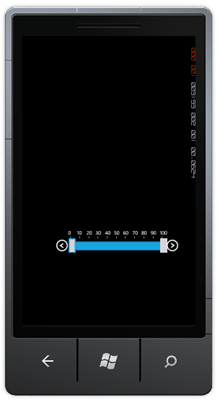
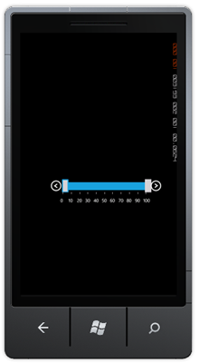
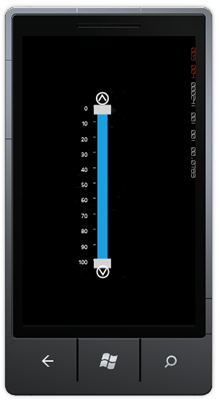
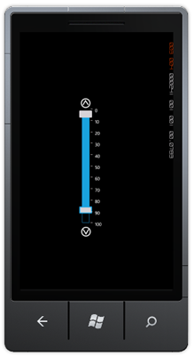

This feature enables you to position the ticks as needed. You can place the ticks in four positions. They are:
· Top
· Down
· Left
· Right
Positioning the Ticks
You can position the ticks using the TicksPlacement property. By default this is set to Top.
The following code illustrates how to position the ticks on the top:
|
[C#] slider1.TickPlacement = Tickplacement.Top; |

Figure 119:Ticks Top
The following code illustrates how to position the ticks at the bottom:
|
[C#]
slider1.TickPlacement = Tickplacement.Down; |

Figure 120:Ticks Bottom
The following code illustrates how to position the ticks to the left:
|
[C#] slider1.TickPlacement = Tickplacement.Left;
|

Figure 121:Ticks Left
The following code illustrates how to position the ticks to the right:
|
[C#]
slider1.TickPlacement = Tickplacement.Right; |

Figure 122:Ticks Right